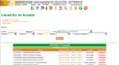
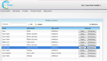
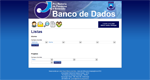
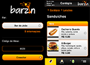
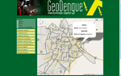
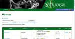

Hello world
Olá! Meu nome é João Paulo, e sou bacharel em
Ciência da Computação, na
Universidade Federal de Campina Grande (UFCG), graduado em 2012.
Minhas principais áreas de interesse são:
- Desenvolvimento para web (front e back end)
- Sistemas de Informação
- Bancos de dados
Mas eu sou interessado em tudo que gira em torno do belo mundo da tecnologia. Eu também sou baixista (sou muito bom) e gosto de tirar fotografias (não sou tão bom).
Nesse site, exponho informações relevantes sobre minhas competências profissionais. Então, por favor, sinta-se à vontade para navegar e conhecer um pouco sobre mim.
E
entre em contato a qualquer hora que quiser, prometo que sou um cara legal!
Experiência
Alguns dos projetos em que trabalhei, mostrando algumas de suas funcionalidades e tecnologias aplicadas.
Profissional (Freelance)
Sistema de Controle Acadêmico - Faculdade CESREI

2006 - 2014
A Faculdade CESREI tem mais de mil alunos, e esse sistema gerenciava todas as suas informações acadêmicas. Ele fornecia controle sobre informação dos cursos da faculdade, alunos, professores, funcionários, disciplinas, horários, pagamentos e folhas de pagamento. Grande parte das tarefas do cotidiano da faculdade foi feita através desse sistema, que ficou em uso por oito anos e foi crucial para o funcionamento da faculdade durante esse tempo. Eu utilizei PHP e MySQL, e a interface foi feita com apenas HTML e CSS.
FLOApp (Free/Livre/Open Applications)

2010
Ambiente colaborativo para gestão de projetos de código aberto que focam em gestão pública, desenvolvido pela empresa de software Inteligis. Eu trabalhei principalmente na criação de web services SOAP (feitos em PHP) para prover a comunicação entre o FLOApp e o FusionForge (um sistema de código aberto que fornece gestão de projetos, tarefas, releases, fóruns de discussão, etc.). Trabalhei também na instalação e configuração dos servidores web (Apache e Tomcat), com PHP 5 e PostgreSQL, em ambiente Linux.
Sistema de Informação - PROPEX - UFCG

2009 - 2010
Criado e desenvolvido por mim, do zero, esse sistema foi construído para dar melhor controle para a Pró-Reitoria de Pesquisa e Extensão (PROPEX) da UFCG sobre os projetos de pesquisa/extensão da universidade, e seus estudantes. Utilizei banco de dados MySQL, PHP para o back-end, e HTML, CSS e Javascript para uma interface rica. Os usuários tinham senha individual criptografada, e diferentes privlégios no sistema, de acordo com seu papel.
Web Site - Faculdade CESREI
2004 - 2010
Criei e desenvolvi esse site não apenas para fazer publicidade da faculdade, mas também para promover a interação com alunos e professores. Tratou-se de um portal dinâmico, com uma área administrativa para inserção de notícias, avisos, enquetes, calendário, editais e resultados de vestibular. Também deu a alunos e professores acesso individual, através de senha. Professores publicavam arquivos para suas turmas, notas de seus alunos, e as enviavam diretamente para a secretaria da faculdade (área do professor mostrada na segunda imagem ao lado). Alunos tinham acesso às notas e arquivos publicados por seus professores, e também a seus históricos acadêmicos e horário individual. Tudo foi desenvolvido com PHP, Flash, HTML/CSS e Javascript, e usou banco de dados Mysql. O layout tinha 3 diferentes esquemas de cor e 8 imagens diferente para o topo (fotos de pontos marcantes de nossa cidade), que eram carregadas aleatoriamente, dando 24 diferentes visuais às páginas.
Apesar de o site ter mudado após 2010, suas features de administração, e as áreas de alunos/professores ainda estão em uso até hoje.
Web Site - Escola CERC
2002 - 2006
Esse foi meu primeiro projeto, que me iniciou na programação. O CERC era uma escola de médio porte (já fechou as portas), com aproximadamente 400 alunos à época. Criei o site completo para a escola, usando PHP, Flash, e HTML/CSS, para conseguir uma interface colorida e bastante animada. Haviam áreas de notícias, artigos, enquetes, quadro de avisos e, a principal característica, acesso aos boletins dos alunos (como é mostrado na segunda imagem). Isso foi feito com banco de dados MySQL. O CERC foi a primeira escola da cidade a fornecer esse serviço aos alunos e seus pais, nos idos de 2002.
Projetos pessoais e outros
Barzin
2011 - 2012
Esse foi um projeto para uma disciplina em minha graduação, e consistiu de um sistema para promover interação em restaurantes e bares, com tablets Android nas mesas. O gerente do estabelecimento tinha o papel de inserir o cardápio no sistema, em uma interface web, e os clientes navegavam nesse cardápio para fazer pedidos no tablet. Era possível dividir cada pedido (e a conta como um todo) para as pessoas na mesa, para que cada um soubesse quanto era sua parcela. O cliente também tinha a possibilidade de bater papo com os outros tablets. Houve 3 pessoas envolvidas nesse projeto, e nós utilizamos Java, PHP, HTML/CSS, Javascript, AJAX e banco de dados MySQL.
Barzin Mobile

2012
Esse foi feito por mim, para aplicar a ideia de Barzin (mencionado anteriormente) para dispositivos móveis, como smartphones. É um web app pelo qual o usuário pode navegar pelo cardápio do restaurante, fazer pedidos (dividindo-os por pessoa, simplificando a divisão da conta), incluir gorjeta, chamar um garçom, e muito mais. A interface HTML5 foi feita inteiramente utilizando jQuery Mobile e PHP. Você pode ver uma demonstração
clicando aqui (usar o código 2975).
Geodengue

2011
Projeto desenvolvido para a disciplina Sistemas de Informações Geográficas, consistia em um SIg que controlava, sobre o mapa de uma cidade, agentes de saúde pública e focos de dengue, uma doença que aflinge centenas de milhares de pessoas no nordeste do Brasil. O sistema foi construído por uma equipe de 5 pessoas, que utilizaram GWT, Java, Geoserver, banco de dados PostgreSQL com a extensão Postgis, para manipular dados e consultas espaciais, tudo sobre uma camada do Google Maps.
Noeh
2015
Sistema para cadastro de pessoas de minha igreja, organizando toda a informação pessoal (como contatos, talentos e habilidades) e participação em diversos grupos (essa é a arca de Noé, todos têm espaço). Também construí uma versão mobile em HTML5, para facilitar o acesso móvel. O back-end é em Ruby on Rails, com manipulação de imagem usando ImageMagick, armazenamento em Dropbox e Google Drive, integração com API do Facebook. Eu também pude ter contato com Amazon Web Services e Digital Ocean para hospedagem online. Uma demonstração está mantida em
http://noeh.herokuapp.com.
Sistema de Informação - Restauração

2012
Esse é um pet project meu, sendo um sistema de informação para a Restauração, uma banda da qual eu faço parte (toco baixo!). Ele registra cada evento e cada música que tocamos, com informações importantes para nós, de modo que possamos consultá-lo sempre que precisamos, por smartphones, notebooks ou dispositivos móveis. O login no sistema é feito através do Facebook, apenas para usuários permitidos (restrito por mim). Utilizei PHP, HTML/CSS, Javascript, requisições AJAX, efeitos jQuery e banco de dados PostgreSQL. O sistema está online no no endereço
http://restauracao.in.
 Campina Grande - PB, Brasil
Campina Grande - PB, Brasil
{kind=link}
{kind=link}
{kind=link}
{kind=link}
{kind=link}
{kind=link}
{kind=link}
{kind=link}
{kind=link}
{kind=link}
{kind=link}
{kind=link}
{kind=link}
{kind=link}
{kind=link}